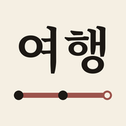
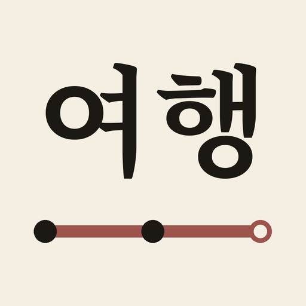
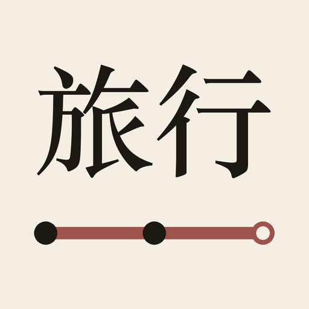
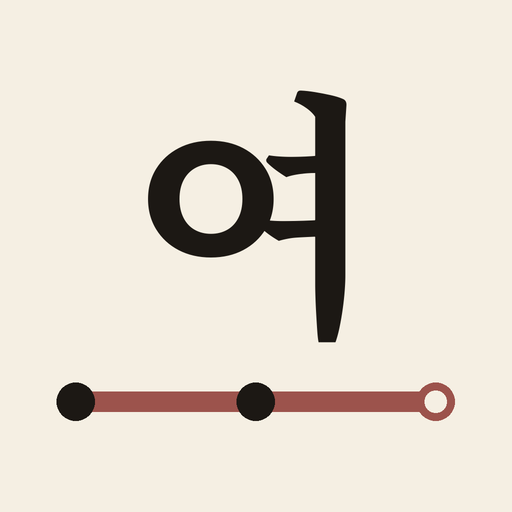

一、放在主畫面上的樣子
跟 iPhone 主畫面上的圖示一樣大，最右邊是已經裝好的日文版旅ことば，對照兩個 App 放在一起的樣子。上面是亮色桌布，下面是深色桌布。

A 여행C 여
旅ことば
A 여행
C 여
旅ことば
二、放大看
三個都是米色底、墨色字，下緣一條路線和三個站（跟日文版旅ことば同一套）。差別只在上面的字。

A 여행目前用這個韓文的「旅行」。一看就知道是韓文 App。

B 旅行漢字「旅行」，跟日文版旅ことば的圖示一模一樣；兩個 App 都裝的話，只能靠圖示底下的名字分辨。

C 여只留一個大字「여」，小尺寸時最清楚。
三、開場動畫
打開 App 時出現約 1 秒：太極旗的紅藍圓升起，中間浮出白色的「旅」，然後淡出進入首頁（日文版是紅色日の丸圓）。點一下可以跳過。
旅
挑好了回訊息告訴我：圖示要 A、B 還是 C；開場動畫可以的話說「可以」，想改也直接說。